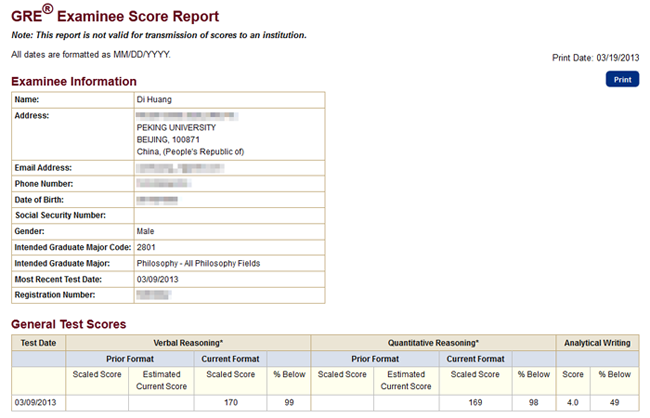
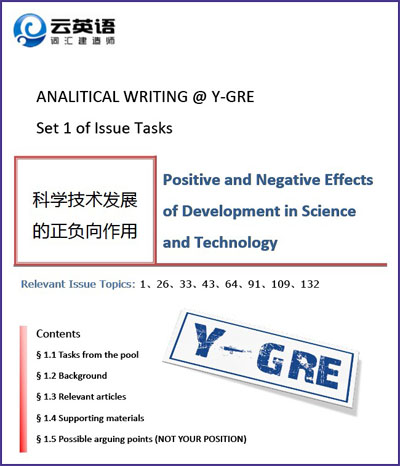
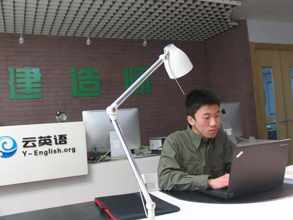

云英语
云英语：因学术而改变

考试时间：2013.3.9（北外考场）
考试分数：V170 Q169 AW4.0
个人情况：北大哲学系大四（物理转哲学）。目前已经保研，赴美留学是继续深造的可能之一。此前没G、T经验，只参加过四级（650分）六级（590分）。备考GRE时长总计大约240小时，唯一参加的辅导机构是云英语（VB和Y-GRE），没有背过红宝及任何其他GRE单词书。关于大陆首个新G满分的消息，我需要着重声明的一点是，我只是语文部分满分170，数学部分是169。
有效备考时间：总计240小时（写作除外），按每天12小时，折算工作日3周。
VB视频100小时，复习和作业50小时，学了VB全部的40%。
Y-GRE平台50小时，复习和作业15小时，跟了全部的30%。（惭愧！）
考前1周正常上课，其他时间准备写作，数学，模考，回顾OG，大约25小时。
决定考G及报班：本打算去德国，没有考G的打算。9月份开学后，正好赶上云英语在为新产品Y-GRE的内测版招募第二期被试。因为VB一直宣称向下兼容GRE，跟完两个月的Y-GRE直接考试目标分数V160 Q170，而且之前研修过VB有好感，就直接报了名。当时想着如果真的不费什么事考个G将来去美国也可以。
为什么不报新东方：估计有人会问这个问题。因为高二上过新东方，感觉很水，这次就没有再考虑。身边有同学做过Y-GRE被试，而且Y-GRE有高分退费（Verbal 160可以退费，超过165可以双倍返还费用），很有激励效应。
单词方面：决定考G之前上过一期云英语的VB视频班，这个班是针对学术阅读的，但是对GRE词汇积累很有帮助，后期刷题的时候基本没有词汇障碍了。除此之外就再没有单独背过单词。周围同学都在玩命背红宝和要你命3000，我觉得效率低容易忘，对提升阅读能力也没什么帮助。很多汉语意思标注的也不对。
备考材料：只有两本。分别是云英语的《VB研修专用脚本》和《V-Builder 170@Y-GRE》。

备考费用：4000元（VB）+5000元（Y-GRE）-6000元（高分返还）=3000元
备考过程：说来惭愧，除了跟着Y-GRE平台和同志们一起做题，讨论，没有什么轰轰烈烈的事迹能和大家分享，就这么顺理成章地过来了。（当时也没料到能考满分，平台上先考的同志们大部分都是160上下，而我的目标分数是165+，可以双倍退费，呵呵）。我觉得最主要V-Builder 170的材料很给力，思维严谨性和解题能力都有很大提升。（虽然有托儿的嫌疑，但事实经过就是这样）
模考：距考试一周的时候做了pp2（子聪说近期的出题策略更接近pp2），做的时候是晚上，可能状态不是太好，V164 Q167。
考前调适：模考之后，我找李浩老师聊了下模考的情况。李老师认为如果正常发挥，目标分数是V168+Q169+，再次建议我贯彻图景式阅读策略。调整好作息，保持较高的思维活跃程度，临场一定要engage。如果觉得精力不能持久的话，吃六味地黄丸，加强身体锻炼。按李浩老师的建议，我开始调整身体状态和作息时间。我的精力不是很好，连续集中注意力时长较短，而且血糖偏低，饥饿时无法工作。考前一周我坚持每天锻炼，早饭加量减油（摄入脂肪容易犯困），午餐和午觉推迟到两点以后（以及，吃了一盒六味地黄丸……）。这些身体和作息上的调整颇为奏效；到考试前两天，中午饥饿和困倦的时间点明显延后到一点半左右了。
考前语文：回顾OG的两套题，重做其中一套，满分。
考前数学：考前一周抽出两三个小时过了过数学的单词，做了一套题。
考前写作：因为专业原因，我对写作比较重视，除去Y-GRE按部就班的准备，考前的时间基本上都在练习写作。（写作成绩还没出来，如果能超过5.0，我会和大家分享准备写作的经验）
考试当天：我的考场在北外。以前在此上过德语班，重走在西校区的小花园里，感觉很是亲切。考场环境也很满意。
看到issue的题目的时候，很是兴奋——“想象力与经验”，正是我准备过且由骆笛歌老师（Diego）帮我修改过的主题。观点、论证、论据都不用费神再想，全部精神只需放在语言的形式层面上，力求句式词汇的丰富准确。issue写完（估计会有700-800词），可能是激动的缘故，手指都有些颤抖。趴在桌上休息了两三分钟（可以通过迟按continue实现的），脑子里简单回想下写argument需要注意的要点，就继续了。argument比较顺利，无需多言。
verbal的首个section基本没有生词，做下来感觉很好；果然，就像李老师说的，第二个verbal section难度明显增大，现在就是一百六十几和能不能满分的问题了。开头的两道填空有生词，不过基本可以通过恰当的策略分析词义选出答案——这是我在Y-GRE上着重练习过的，毕竟很难期待考试中不遇到生词。第二个verbal section整个做下来，虽然感觉很难，但是并没有特别的障碍，基本也就放心了。我碰到的是三个verbal和两个quantitative，数学推理的第二套题大概有些放松，这套题的最后一道只做了一半——我想错的那道数学题应该就是它了。
当V170的成绩最后显示在屏幕上的时候，我的感觉是——有些虚实莫辨。
倒不是因为没想到能答这么好——恰恰相反，之前没少幻想。不过幻想得太多，到真成了现实的时候，自己反而觉得不真实了。要说verbal拿满分的因素，运气当然是最先要感谢的。但是长期以来大量的英语学术阅读，云英语的VB和Y-GRE平台，和考前的身体作息调整，还有不迷信技巧，我觉得这些都是不可或缺的。
一点感悟：回想备考GRE的整个过程，我觉得新G考察的是使用英语进行分析性阅读和写作的能力——这不是突击背记单词、学习考试技巧能够提升的。以有效的方式准备GRE，其实是对学术英文的很好训练——而这不仅包括语言的形式层面，也包括其承载的内容。我以为这才是对待GRE的最合理的方式，而我也在这个过程中受益良多。
最后，感谢曹子聪，骆笛歌（Diego），过群和其他所有一同备考交流经验的朋友，感谢云英语的VB和Y-GRE，以及为我们创造这一学术产品的李浩老师和他的战友们。希望Y-GRE能早日推出正式版，祝大家都能在GRE路上一帆风顺，考出160+的理想成绩！

版权所有 2011-2015 北京云英一语教育咨询有限公司 Y-English All Rights Reserved
地址：北京市海淀区五道口华清嘉园商务会馆802
电话：400-876-3898 010-82863898 82863899 传真：010-82863897